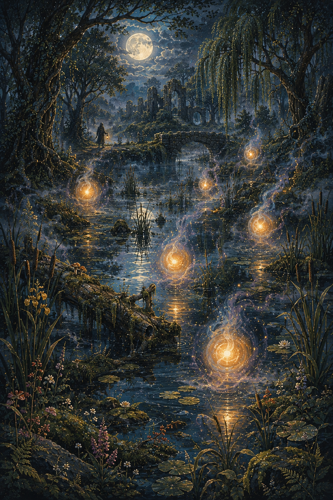
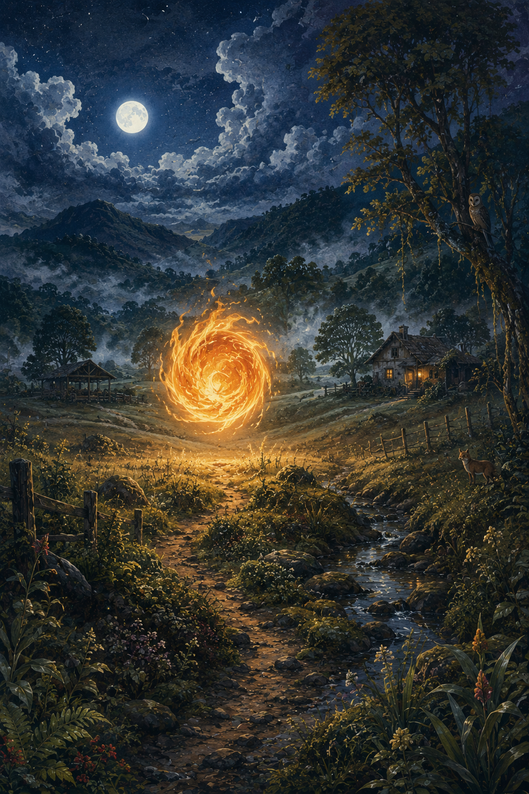
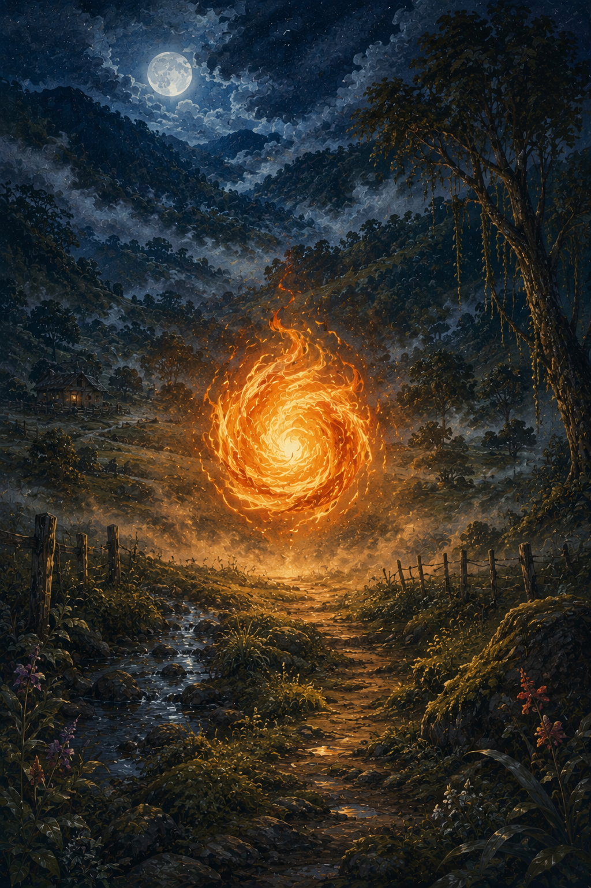
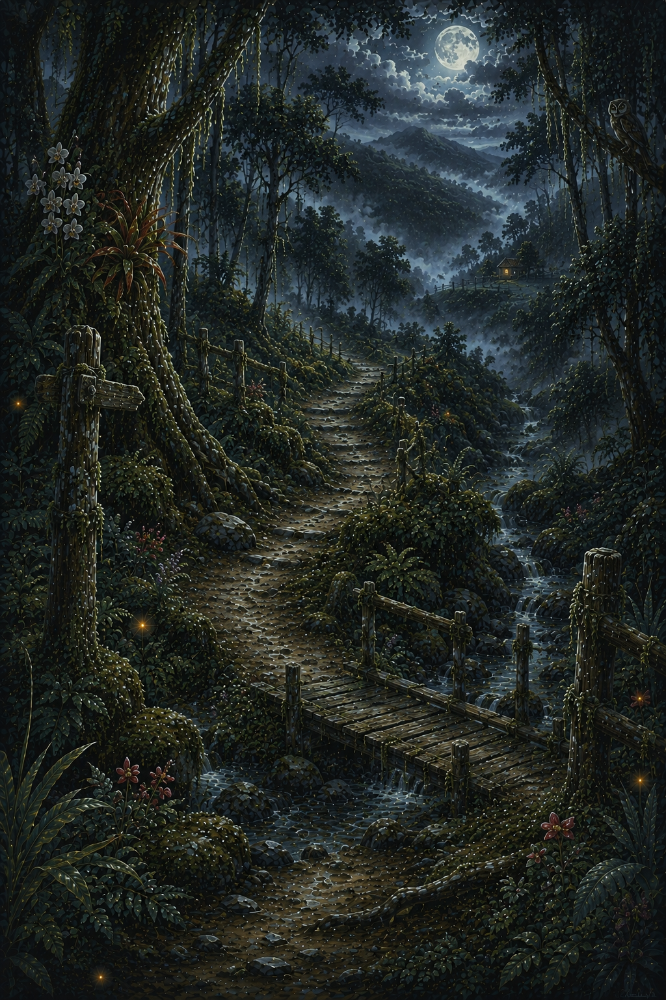
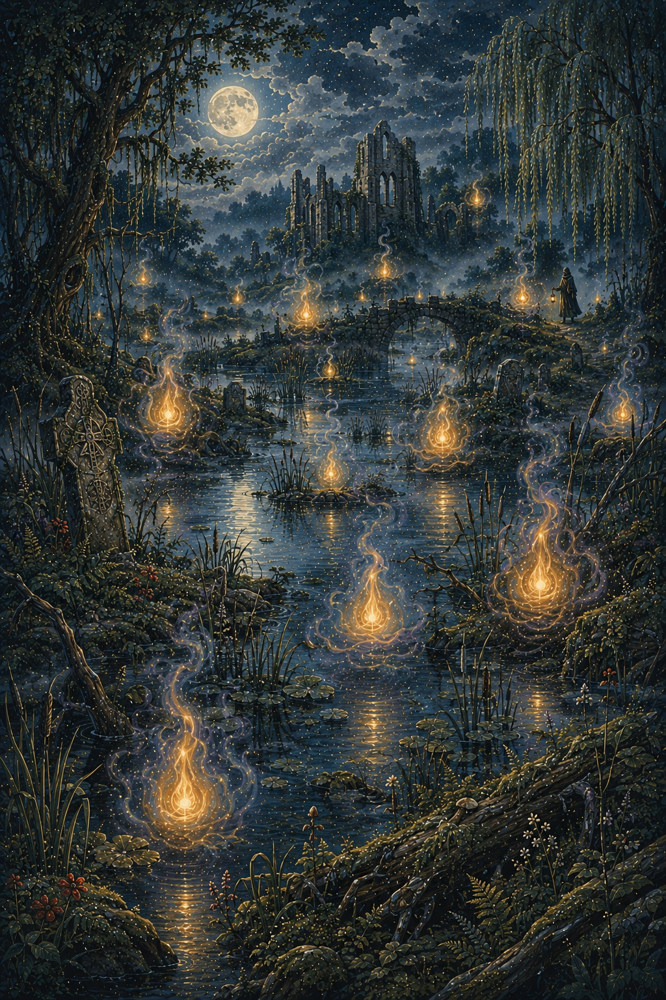

Will-o'-the-Wisp
Luz fantasmal del folclore europeo que aparece en pantanos y zonas oscuras.
La Bola de Fuego es una leyenda popular presente en varias regiones de Colombia, especialmente en zonas rurales y caminos solitarios. Se describe como una esfera luminosa que aparece en la noche, moviéndose rápidamente entre montañas o campos.
Muchas personas afirman haberla visto como una manifestación sobrenatural relacionada con espíritus en pena o fuerzas misteriosas de la naturaleza.

Según los relatos, la Bola de Fuego aparece principalmente en noches oscuras, especialmente en caminos rurales o zonas de montaña donde hay poca iluminación.
Su movimiento errático ha generado miedo y fascinación en las comunidades que la han observado.


Existen múltiples interpretaciones sobre la Bola de Fuego. Algunos creen que se trata de almas en pena que no han encontrado descanso.
Otros la relacionan con fenómenos naturales como gases inflamables o descargas eléctricas atmosféricas.
La leyenda ha sido utilizada tradicionalmente como advertencia para evitar que las personas transiten solas por la noche en zonas peligrosas.
Su historia forma parte del imaginario colectivo rural y se ha transmitido de generación en generación.

La leyenda de la Bola de Fuego está presente en varias regiones de Colombia, especialmente en zonas rurales de la región Andina y algunas partes del Caribe.
Es parte del folclore oral transmitido en comunidades campesinas.


La Bola de Fuego representa el misterio de la naturaleza y el temor a lo desconocido dentro del folclore rural colombiano.
También funciona como una narrativa cultural que refuerza el respeto por la noche y los caminos solitarios.

Luz fantasmal del folclore europeo que aparece en pantanos y zonas oscuras.

Fenómenos luminosos inexplicables presentes en múltiples culturas del mundo.

Fuego fatuo del folclore medieval europeo asociado a espíritus.